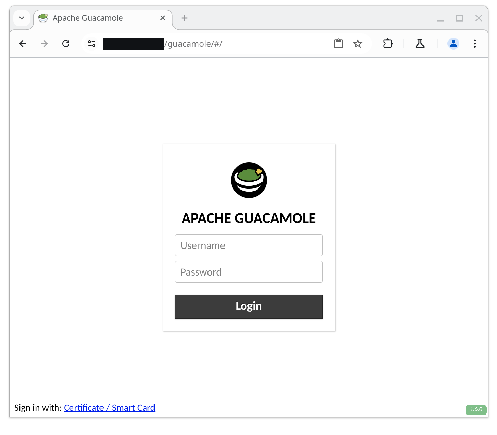
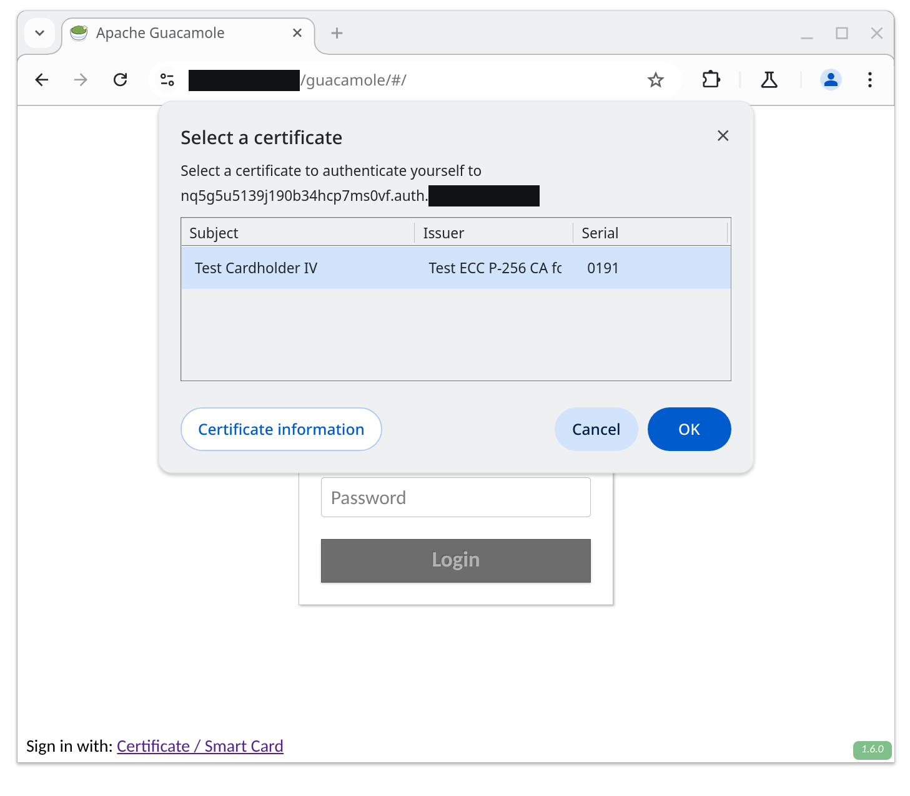
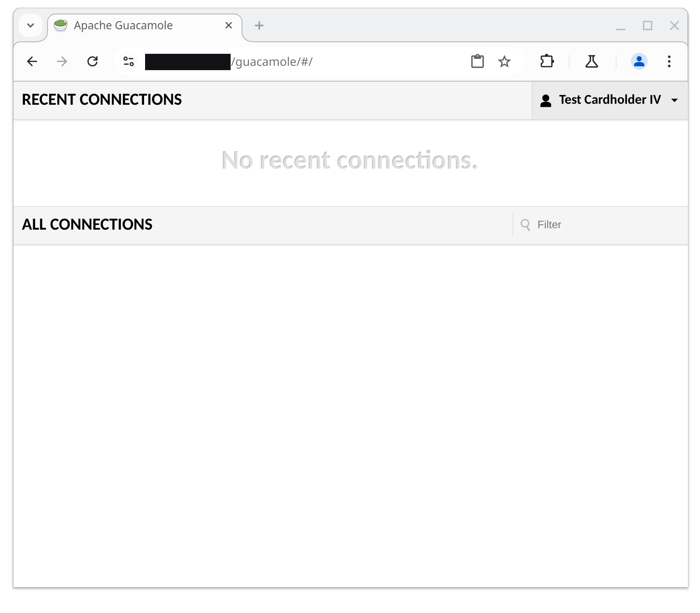

Signing in with smart cards or certificates#
Single sign-on using SSL client authentication depends on having a reverse proxy configured to provide SSL termination for Guacamole. Unlike a standard reverse proxy setup, however, a portion of the requests served through the proxy will verify the client’s identity using SSL client authentication and pass that information on to Guacamole.
Warning
You will need to restart the Guacamole web application in order to complete configuration. Doing this will disconnect all active users, so please:
Do this only at a time that you can tolerate service unavailability, such as a scheduled maintenance window.
Keep in mind that configuration errors may prevent Guacamole from starting back up.
How SSL client authentication works with Guacamole#
Using SSL client authentication for Guacamole involves configuring a reverse proxy to provide SSL termination for the same instance of Guacamole at two different domains or subdomains:
A wildcard subdomain and certificate that will be used strictly for performing SSL client authentication. The wildcard certificate is necessary to allow Guacamole to generate temporary subdomains and avoid browser caching of credentials.
A normal domain/subdomain (and corresponding certificate) that will be used for Guacamole itself and will not use SSL client authentication.
When Guacamole is configured for single sign-on using SSL client authentication, users are presented with an additional “Certificate / Smart Card” option at the bottom of the login screen:

If a user clicks on “Certificate / Smart Card”, Guacamole generates a temporary subdomain to handle authentication and redirects the user to that subdomain. As the SSL termination is configured to handle these subdomains with SSL client authentication, the user is authenticated by the reverse proxy using that mechanism:

The reverse proxy notifies Guacamole of the result of authentication using the
X-Client-Verified and X-Client-Certificate headers. Once the user is
authenticated (or fails to authenticate), Guacamole redirects the user back to
the primary domain and their SSL authentication result is read.
If the user successfully authenticated, their username is determined from the certificate:

If the user did not successfully authenticate, authentication with Guacamole fails and the user sees the login screen again.
Configuring SSL termination to use client authentication#
There are two separate configurations that will need to be applied to your reverse proxy, one for each of the domains noted above. In each case, the proxy will need to add headers that will be consumed by Guacamole’s SSL authentication integration.
Hint
The *.auth.guac.example.net and guac.example.net domains are used
throughout this documentation as representative placeholders. Your
configuration will differ depending on the domain your users are using to
access your instance of Guacamole.
Both the wildcard domain and normal domain that will be configured here will need to be referenced in Guacamole’s configuration. Take note of these domains, so that you can provide their values when configuring Guacamole later.
Wildcard domain (performs SSL client authentication)#
Since it is the wildcard domain that will actually perform SSL client authentication (Guacamole receives the authentication result from your reverse proxy via HTTP headers), the configuration for the wildcard domain requires several additional changes from the standard reverse proxy configuration for Guacamole:
- Enable SSL client authentication in “optional” mode
This will result in the reverse proxy requesting authentication, but will not prohibit the authentication result from being sent on to Guacamole if authentication fails.
- Pass through the
Hostheader received by the reverse proxy It is the
Hostheader that determines whether the request is routed to the reverse proxy’s handling of wildcard domain vs. normal domain, and Guacamole needs this information, as well, to determine context.- Include the authentication result as the value of the
X-Client-Verifiedheader. This header must contain the value
SUCCESSif authentication succeeded and may contain any other value otherwise. If authentication failed, this header may containFAILED:followed by a human-readable description of the failure, and Guacamole will include that description in its logs.Both the Apache HTTP Server and Nginx support this format for passing on the result of SSL client authentication.
- Include the URL-encoded client certificate in PEM format as the value
X-Client-Certificateheader. Here, URL encoding is necessary to allow the certificate to be included as the value of an HTTP header. Both the Apache HTTP Server and Nginx support URL encoding of this value.
The portions of the reverse proxy configuration which differ from the standard configuration are highlighted below. Your reverse proxy configuration will need to be similarly modified to allow Guacamole to receive and process the authentication result.
<VirtualHost *:443>
ServerName x.auth.guac.example.net
ServerAlias *.auth.guac.example.net
SSLEngine on
SSLCertificateFile "/etc/ssl/certs/_.auth.guac.example.net.crt"
SSLCertificateKeyFile "/etc/ssl/private/_.auth.guac.example.net.key"
SSLCACertificateFile "/etc/ssl/certs/client-auth-ca-certs.crt"
SSLVerifyClient optional
SSLVerifyDepth 2
<Location /guacamole/>
Order allow,deny
Allow from all
ProxyPass http://localhost:8080/guacamole/ flushpackets=on
ProxyPassReverse http://localhost:8080/guacamole/
ProxyPreserveHost on
RequestHeader set X-Client-Certificate "expr=%{escape:%{SSL_CLIENT_CERT}}"
RequestHeader set X-Client-Verified "%{SSL_CLIENT_VERIFY}s"
</Location>
</VirtualHost>
Hint
The typical <Location /guacamole/websocket-tunnel>
section is intentionally omitted above. This is because
SSL client authentication will be performed only via a specific, dedicated
endpoint that does not involve any tunnel, let alone the WebSocket tunnel.
Including a <Location> section for the websocket-tunnel endpoint beneath
the wildcard domain will not prevent smart card / certificate authentication
from working, but it is unnecessary for the wildcard domain.
server {
listen 443 ssl;
server_name _.auth.guac.example.net;
ssl_certificate /etc/ssl/certs/_.auth.guac.example.net.crt;
ssl_certificate_key /etc/ssl/private/_.auth.guac.example.net.key;
ssl_client_certificate /etc/ssl/certs/client-auth-ca-certs.crt;
ssl_verify_client optional;
location /guacamole/ {
proxy_pass http://localhost:8080;
proxy_buffering off;
proxy_http_version 1.1;
proxy_set_header X-Forwarded-For $proxy_add_x_forwarded_for;
proxy_set_header Upgrade $http_upgrade;
proxy_set_header Connection $http_connection;
access_log off;
proxy_set_header Host $http_host;
proxy_set_header X-Client-Verified $ssl_client_verify;
proxy_set_header X-Client-Certificate $ssl_client_escaped_cert;
}
}
Normal domain (does not perform SSL client authentication)#
Configuration of the non-wildcard, normal domain is simpler than its wildcard
counterpart, but still requires at least pass-through of the Host header
received by the reverse proxy. As with the wildcard domain, this is necessary
for Guacamole to determine the context of the request it received.
<VirtualHost *:443>
ServerName guac.example.net
SSLEngine on
SSLCertificateFile "/etc/ssl/certs/guac.example.net.crt"
SSLCertificateKeyFile "/etc/ssl/private/guac.example.net.key"
<Location /guacamole/>
Order allow,deny
Allow from all
ProxyPass http://localhost:8080/guacamole/ flushpackets=on
ProxyPassReverse http://localhost:8080/guacamole/
ProxyPreserveHost on
</Location>
<Location /guacamole/websocket-tunnel>
Order allow,deny
Allow from all
ProxyPass ws://localhost:8080/guacamole/websocket-tunnel
ProxyPassReverse ws://localhost:8080/guacamole/websocket-tunnel
</Location>
</VirtualHost>
server {
listen 443 ssl;
server_name guac.example.net;
ssl_certificate /etc/ssl/certs/guac.example.net.crt;
ssl_certificate_key /etc/ssl/private/guac.example.net.key;
location /guacamole/ {
proxy_pass http://localhost:8080;
proxy_buffering off;
proxy_http_version 1.1;
proxy_set_header Host $http_host;
proxy_set_header X-Forwarded-For $proxy_add_x_forwarded_for;
proxy_set_header Upgrade $http_upgrade;
proxy_set_header Connection $http_connection;
access_log off;
}
}
With both the wildcard and normal domains configured, your reverse proxy should be ready to handle SSL client authentication and pass on the results of any authentication attempts to Guacamole in the format expected.
Installing/Enabling the SSL client authentication extension#
Guacamole is configured differently depending on whether Guacamole was installed natively or using the provided Docker images. The documentation here covers both methods.
Native installations of Guacamole under Apache Tomcat
or similar are configured by modifying the contents of GUACAMOLE_HOME
(Guacamole’s configuration directory), which is located at
/etc/guacamole by default and may need to be created first:
Download
guacamole-auth-sso-1.6.0.tar.gzfrom the release page for Apache Guacamole 1.6.0 and extract it.Create the
GUACAMOLE_HOME/extensionsdirectory, if it does not already exist.Copy the
ssl/guacamole-auth-sso-ssl-1.6.0.jarfile from the contents of the archive toGUACAMOLE_HOME/extensions/.Proceed with the configuring Guacamole for the newly installed extension as described below. The extension will be loaded after Guacamole has been restarted.
Note
Download and documentation links for all officially supported extensions for a particular version of Guacamole are always provided in the release notes for that version. The copy of the documentation you are reading now is from Apache Guacamole 1.6.0.
If you are using a different version of Guacamole, please locate that version within the release archives and consult the documentation for that release instead.
Docker installations of Guacamole include a bundled copy of Apache
Tomcat and are configured using environment
variables. The startup process of the Docker image automatically populates
GUACAMOLE_HOME (Guacamole’s configuration directory) based
on the values of these variables.
- If deploying Guacamole using Docker Compose:
You will need to add at least one relevant environment variable to the
environmentsection of yourguacamole/guacamolecontainer, such as theSSL_AUTH_ENABLEDenvironment variable:SSL_AUTH_ENABLED: "true"
- If instead deploying Guacamole by running
docker runmanually: The same environment variable(s) will need to be provided using the
-eoption. For example:$ docker run --name some-guacamole \ -e SSL_AUTH_ENABLED="true" \ -d -p 8080:8080 guacamole/guacamole
If SSL_AUTH_ENABLED is set to false, the extension will NOT be
installed, even if other related environment variables have been set. This can
be used to temporarily disable usage of an extension without needing to remove
all other related configuration.
You don’t strictly need to set SSL_AUTH_ENABLED if other related
environment variables are provided, but the extension will be installed only if
at least one related environment variable is set.
Required configuration#
Guacamole’s SSL client authentication support requires two properties which describe the domains that your reverse proxy has been configured to use for authentication and for simply accessing Guacamole. These properties are absolutely required in all cases:
If deploying Guacamole natively, you will need to add a section to your
guacamole.properties that looks like the following:
ssl-auth-uri: https://*.auth.guac.example.net
ssl-auth-primary-uri: https://guac.example.net
The properties that must be set in all cases for any Guacamole installation using this extension are:
ssl-auth-uriThe URI that should be used to authenticate users with SSL/TLS client authentication. This must be a URI that points to THIS instance of Guacamole, but behind SSL termination that requires SSL/TLS client authentication.
ssl-auth-primary-uriThe URI of this instance without SSL/TLS client authentication required. This must be a URI that points to THIS instance of Guacamole, but behind SSL termination that DOES NOT require or request SSL/TLS client authentication.
Guacamole’s SSL client authentication support requires two environment variables which describe the domains that your reverse proxy has been configured to use for authentication and for simply accessing Guacamole. These environment variables are absolutely required in all cases:
If deploying Guacamole using Docker Compose, you will need to add a set of
environment variables to the environment section of your
guacamole/guacamole container that looks like the following:
SSL_AUTH_URI: 'https://*.auth.guac.example.net'
SSL_AUTH_PRIMARY_URI: 'https://guac.example.net'
If instead deploying Guacamole by running docker run manually, these same
environment variables will need to be provided using the -e option. For
example:
$ docker run --name some-guacamole \
-e SSL_AUTH_URI="https://*.auth.guac.example.net" \
-e SSL_AUTH_PRIMARY_URI="https://guac.example.net" \
-d -p 8080:8080 guacamole/guacamole
The environment variables that must be set in all cases for any Docker-based Guacamole installation using this extension are:
SSL_AUTH_URIThe URI that should be used to authenticate users with SSL/TLS client authentication. This must be a URI that points to THIS instance of Guacamole, but behind SSL termination that requires SSL/TLS client authentication.
SSL_AUTH_PRIMARY_URIThe URI of this instance without SSL/TLS client authentication required. This must be a URI that points to THIS instance of Guacamole, but behind SSL termination that DOES NOT require or request SSL/TLS client authentication.
Additional configuration (optional)#
Additional optional properties are available to control how the requests received from your reverse proxy are processed, including narrowing the distinguished names (DNs) that should be accepted as valid:
ssl-auth-client-certificate-headerThe name of the header to use to retrieve the URL-encoded client certificate from an HTTP request received from an SSL termination service providing SSL/TLS client authentication. The certificate must be in PEM format.
By default, the
X-Client-Certificateheader will be used.ssl-auth-client-verified-headerThe name of the header to use to retrieve the verification status of the certificate an HTTP request received from an SSL termination service providing SSL/TLS client authentication.
The value of this header must be “SUCCESS” (all uppercase) if the certificate was successfully verified. The full set of accepted values that your reverse proxy should submit for this header is:
SUCCESSClient certificate verification succeeded.
FAILED: reasonClient certificate verification failed for the given reason (a human-readable description).
NONENo client certificate was present.
This matches the values used by both the Apache HTTP Server and Nginx. Any value not shown above is interpreted as an authentication failure.
By default, the
X-Client-Verifiedheader will be used.ssl-auth-max-token-validityThe amount of time that a temporary authentication token for SSL/TLS authentication may remain valid, in minutes.
This token is used to represent the user’s asserted identity after it has been verified by the SSL termination service. This interval must be long enough to allow for network delays in receiving the token, but short enough that unused tokens do not consume unnecessary server resources and cannot potentially be guessed while the token is still valid. These tokens are 256-bit secure random values.
By default, tokens are valid for 5 minutes.
ssl-auth-subject-username-attributeThe LDAP attribute or attributes that may be used to represent a username within the subject DN of a user’s X.509 certificate. If the least-significant attribute of the subject DN is not one of these attributes, the certificate will be rejected.
By default, any attribute is accepted (the least-significant attribute of the subject DN is used as the username, regardless of what attribute that may be).
ssl-auth-subject-base-dnThe base DN containing all valid subject DNs. If specified, only certificates asserting subject DNs beneath this base DN will be accepted.
By default, all DNs are accepted.
ssl-auth-max-domain-validityThe amount of time that the temporary, unique subdomain generated for SSL/TLS authentication may remain valid, in minutes. This subdomain is used to ensure each SSL/TLS authentication attempt is fresh and does not potentially reuse a previous authentication attempt that was cached by the browser or OS. This interval must be long enough to allow for network delays in authenticating the user with the SSL termination service that enforces SSL/TLS client authentication, but short enough that an unused domain does not consume unnecessary server resources and cannot potentially be guessed while that subdomain is still valid. These subdomains are 128-bit secure random values.
By default, generated domains are valid for 5 minutes.
Additional optional environment variables are available to control how the requests received from your reverse proxy are processed, including narrowing the distinguished names (DNs) that should be accepted as valid:
SSL_AUTH_CLIENT_CERTIFICATE_HEADERThe name of the header to use to retrieve the URL-encoded client certificate from an HTTP request received from an SSL termination service providing SSL/TLS client authentication. The certificate must be in PEM format.
By default, the
X-Client-Certificateheader will be used.SSL_AUTH_CLIENT_VERIFIED_HEADERThe name of the header to use to retrieve the verification status of the certificate an HTTP request received from an SSL termination service providing SSL/TLS client authentication.
The value of this header must be “SUCCESS” (all uppercase) if the certificate was successfully verified. The full set of accepted values that your reverse proxy should submit for this header is:
SUCCESSClient certificate verification succeeded.
FAILED: reasonClient certificate verification failed for the given reason (a human-readable description).
NONENo client certificate was present.
This matches the values used by both the Apache HTTP Server and Nginx. Any value not shown above is interpreted as an authentication failure.
By default, the
X-Client-Verifiedheader will be used.SSL_AUTH_MAX_TOKEN_VALIDITYThe amount of time that a temporary authentication token for SSL/TLS authentication may remain valid, in minutes.
This token is used to represent the user’s asserted identity after it has been verified by the SSL termination service. This interval must be long enough to allow for network delays in receiving the token, but short enough that unused tokens do not consume unnecessary server resources and cannot potentially be guessed while the token is still valid. These tokens are 256-bit secure random values.
By default, tokens are valid for 5 minutes.
SSL_AUTH_SUBJECT_USERNAME_ATTRIBUTEThe LDAP attribute or attributes that may be used to represent a username within the subject DN of a user’s X.509 certificate. If the least-significant attribute of the subject DN is not one of these attributes, the certificate will be rejected.
By default, any attribute is accepted (the least-significant attribute of the subject DN is used as the username, regardless of what attribute that may be).
SSL_AUTH_SUBJECT_BASE_DNThe base DN containing all valid subject DNs. If specified, only certificates asserting subject DNs beneath this base DN will be accepted.
By default, all DNs are accepted.
SSL_AUTH_MAX_DOMAIN_VALIDITYThe amount of time that the temporary, unique subdomain generated for SSL/TLS authentication may remain valid, in minutes. This subdomain is used to ensure each SSL/TLS authentication attempt is fresh and does not potentially reuse a previous authentication attempt that was cached by the browser or OS. This interval must be long enough to allow for network delays in authenticating the user with the SSL termination service that enforces SSL/TLS client authentication, but short enough that an unused domain does not consume unnecessary server resources and cannot potentially be guessed while that subdomain is still valid. These subdomains are 128-bit secure random values.
By default, generated domains are valid for 5 minutes.
Completing installation#
Guacamole will only reread its configuration and load newly-installed extensions during startup, so Tomcat will need to be restarted before these changes can take effect. Restart Tomcat and give the new functionality a try.
You do not need to restart guacd.
Hint
If Guacamole does not come back online after restarting Tomcat, check the logs. Configuration problems may prevent Guacamole from starting up, and any such errors will be recorded in Tomcat’s logs.
The environment variables that configure the behavior of Docker can only be set at the time the Docker container is created. To apply these configuration changes, you will need to recreate the container.
- If your Guacamole container was deployed using Docker Compose:
Simply making the desired changes to your
docker-compose.ymland runningdocker compose upis sufficient. Docker Compose will automatically recognize that the environment variables of the container have changed and recreate it.- If your Guacamole container was deployed manually (using
docker run): You wll need to manually use
docker rmto remove the old container and then manually recreate it withdocker runand the new environment variables.
Hint
If Guacamole does not come back online after recreating the container, check the Docker logs. Configuration problems may prevent Guacamole from starting up, and any such errors will be recorded in the Docker logs for the Guacamole container.